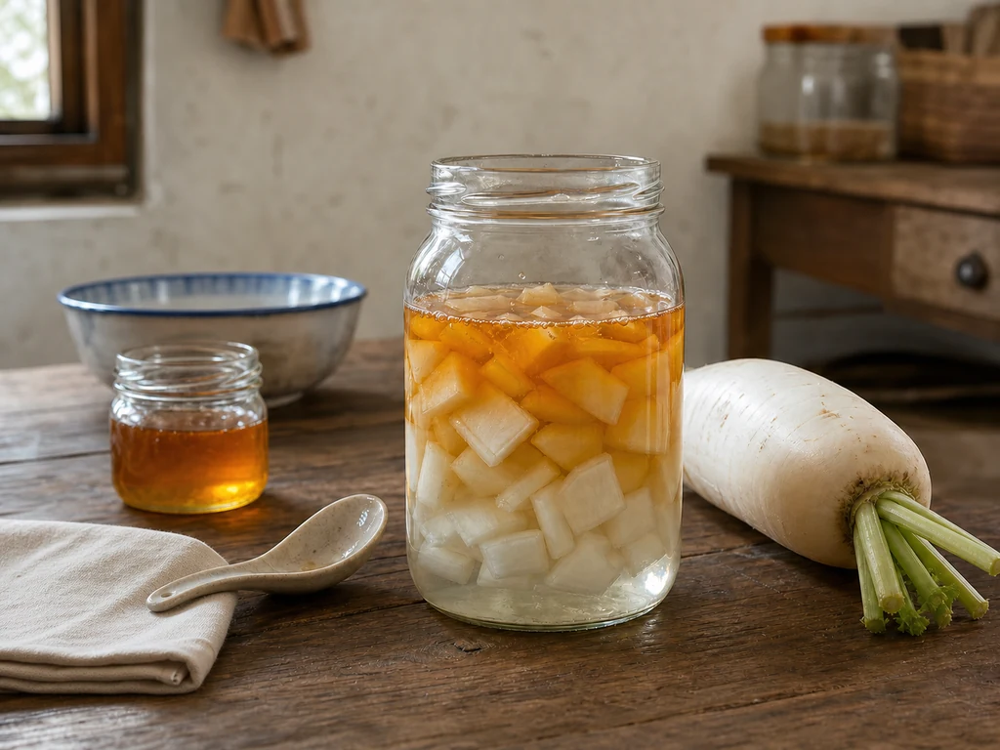

Honey and White Radish in a Lidded Jar
A wet-market seller chose a firm white radish, trimmed its leaves, and wrapped it in newspaper. At home, I set the cut pieces beneath honey in a lidded jar.

The radish stall near closing
The woman behind the vegetable stall lifted three white radishes before choosing one for me. She ran a thumb over the unmarked skin, cut away the tired leaves, and wrapped the root so it would not wet the other groceries.
I carried it home beside a small jar of honey. Their containers looked unrelated on the counter: the radish still held market soil near its stem, while the honey jar had a clean metal lid.
Clear liquid at the bottom
I washed the radish, cut enough to cover the bottom of a glass jar, and spooned honey over the pieces. The lid went on loosely. As I cleared the board, a thin clear layer began to gather below the white cubes.
Pear water belonged to a small night pot. Scallion white went straight from the dinner board into water, while ginger and red dates darkened an enamel cup after the meal. The radish stayed uncooked and visible through glass.
The jar returned to the shelf
Before pouring, I tipped the jar once and watched the pieces shift against the side. The sharp radish smell had softened beneath the smell of honey, though it returned when the lid came off.
I rinsed the spoon and wiped the damp ring from the counter. The jar went back onto the kitchen shelf with the cut face of the remaining radish covered beside it.